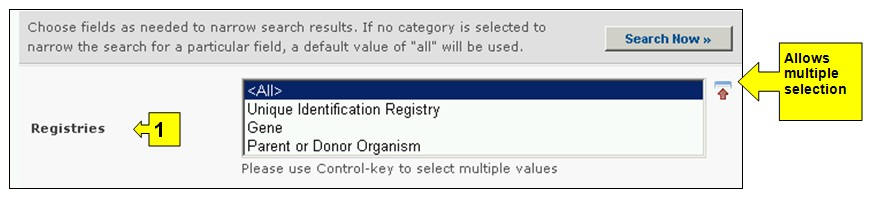
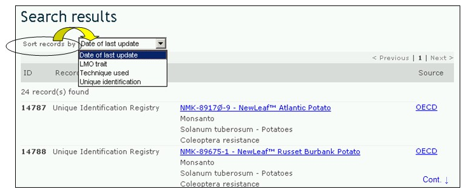

يتوفر البحث عن المعلومات عن الكائنات الحيّة المحوَّرة والجينات والكائنات في قائمة الاختيارات المنسدلة الخاصة بإيجاد المعلومات في شريط التصفح أو عبر الوصلة الواقعة في الجانب الأيسر من صفحة إيجاد المعلومات او عبر الوصلة المتوفرة في نص الكائنات الحيّة المحوَّرة والجينات والكائنات الموجود على نفس الصفحة.
في صفحة البحث المتعلقة بالكائنات الحيّة المحوَّرة والجينات والكائنات يستطيع المستعمل أن يبحث عن معلومات فيما يلي:
1. سجل المحددات الفريدة للكائنات الحيّة المحوَّرة التي تقدم معلومات موجزة عن جميع الكائنات الحيّة المحوَّرة المسجلة في غرفة تبادل معلومات السلامة الأحيائية بما في ذلك ظواهر التحوّر والتحوّرات الجينية ورمز التحديد الفريد (إذا توافر) لهوية كل سجل مقيد. وتُعرض الوصلات بجميع القرارات التي تشير إلى هذه الكائنات في أسفل كل سجل للكائنات الحيّة المحوَّرة؛
2. سجل الجينات، يقدم معلومات موجزة عن عناصر الجينات وخصائص التحويرات الوراثية للكائنات الحيّة المحوَّرة؛
3. سجل الكائنات العضوية ويقدم معلومات تفصيلية عن الكائنات السلف أو الكائنات المتلقية أو الكائنات المانحة ذات الصلة بالكائنات الحيّة المحوَّرة في غرفة تبادل معلومات السلامة الأحيائية.
ويوجد في صفحة البحث عن الكائنات الحيّة المحوَّرة والجينات والكائنات ستة أُطر لمعايير البحث مقدَّمة من أجل تنقيح عمليات البحث في قاعدة البيانات هذه. ويتوفر في كل اطار قائمة منسدلة تسمح انتقاء المعيار المطلوب. التركيب المبدئي للقائمة المنسدلة هو اول فقرة موجود على اطار القائمة. على جهة اليمين لكل اطار، يسمح الزر للمستخدم لتنشيط مختلف الخيارات. عند استخدام طريقة مختلف الخيارات، من الممكن اضافة معايير اخرى للاختيار من خلال الضغط على المعيار المناسب عند الضغط على زر (Ctrl).

صورة 46
يوجد ستة اطر للمعايير لتحسين البحث في قاعدة المعلومات.
الإطار 1 {السجلات} تسردً السجلات الثلاثة المتوفرة: الكائنات المعدلة جينيا، الجين و السلف او الكائن الواهب.

صورة 47
الإطار 2 { نوع الكائن الحي المحور} يمسح للمستخدم لتطبيق ترشيح لمعالجة النصوص (Filters) لمختلف جوانب الكائنات الحية المحوَّرة، التي يمكن تفعليها لتضييق نطاق البحث. فئات ترشيح لمعالجة النصوص (Filters) هي التالية: (أ) كائنات حية محورة، تعرف عادة وفق المعرف الفريد (على سبيل المثال (MONØØ81Ø-6، (ب) السمات المدخلة والمحورة (على سبيل المثال Glyphosate tolerance)،(ج) اسم الجين (على سبيل المثال Cry 1A(b))، (د) التقنية المعتمدة (على سبيل المثال Agrobacterium mediated)، (ه) الاسم الشائع الابوي للكائن (على سبيل المثال الذرة)، (و) الاسم العلمي الابوي للكائن (على سبيل المثال Zea mays)، او (ز) مقدم الطلب (ادخال النص حر على سبيل المثال مونسانتو).
اخنيار معيار برنامج ترشيح او معايير في قائمة منسدلة يفتح اطارات بحث مرفقة بقائمة اختيارات منسدلة، كل واحدة منها ترتبط لواحد من معبار برنامج المصفاة. يمكن اضافة عدة مصفاة عبر استعمال زر (CTRL) (على سبيل المثال الضغط على معيار الترشيح المعني عند الضغط على زر (Ctrl.

صورة 48
الإطار3 { نوع الجين} يسمح للمستخدم تطبيق برامج ترشيح لمعالجة النصوص (Filters) فيما يتعلق باسم الجينات وسمات المورثات وتسمح للمستعمل بأن يصفي نتائج البحث بأي من المعيارين أو بكليهما.
اخنيار معيار برنامج ترشيح او معايير في قائمة منسدلة يفتح اطارات بحث مرفقة بقائمة اختيارات منسدلة، كل واحدة منها ترتبط لواحد من معبار برنامج المصفاة. يمكن اضافة عدة مصفاة عبر استعمال زر (CTRL) (على سبيل المثال الضغط على معيار الترشيح المعني عند الضغط على زر (Ctrl.

صورة 49
الإطار 4 { نوع الكائن} يسمح للمستخدم تطبيق برامج ترشيح للمعالجة (Filters) فيما يتعلق بالاسم الشائع أو الاسم العلمي من اجل تضييق نطاق نتائج البحث التي تتعلق بالمعايير المختارة.
اخنيار معيار برنامج ترشيح او معايير في قائمة منسدلة يفتح اطارات بحث مرفقة بقائمة اختيارات منسدلة، كل واحدة منها ترتبط لواحد من معبار برنامج المصفاة. يمكن اضافة عدة مصفاة عبر استعمال زر (CTRL) (على سبيل المثال الضغط على معيار الترشيح المعني عند الضغط على زر (Ctrl.

صورة 50
الإطار 5 {تاريخ السجل} يسمح للمستعمل بأن يضيق نطاق البحث إلى التاريخ الذي أُدخل فيه السجل في قاعدة بيانات غرفة تبادل معلومات السلامة الأحيائية. وتعرض قائمة الاختيارات المنسدلة عدداً من الخيارات لتحديد البحث بالسجلات التي تم تقديمها بالمهلة الزمنية المحددة (على سبيل المثال "اليوم الفائت، الشهر الفائت، السنة الفائتة، الخ).

صورة 51
الإطار 6 {بحث الكلمة الدليلية} ايُعرض فرصة لاستخدام الكلمات الدليلية لتضييق نطاق البحث. ويستطيع المستعمل أن يستخدم تكوين جملة الكلمات الدليلية المعيارية (و/أو) للبحث مع استخدام عدة كلمات أو أجزاء أساسية من الكلمات (استيراد أو تصدير). البحث الذي يستخدم الكلمات الدليلية يصدر نتائج بالسجلات التي تتضمن النص الذي يتم البحث عنه فقط وليس المفردات التي لم يتم ادخالها (على سبيل البحث عن "الذرة" ينتج قائمة بالسجلات التي تحوي فقط كلمة "الذرة" ولكن ليس "Corn" أو "Zea mays").

صورة 52
ويوجد في أسفل آلية البحث ثلاث ازرار لانتاج قائمة بالسجلات. ويسمح زر ابحث الآن Search Now للمستعمل بأن يشغّل برنامج بحث استناداً إلى معايير البحث المختارة في أُطُر آليات البحث. نتائج البحث تفرز ابجديا مبدئيا وفقا لاسم البلد. ويسمح اختيار تصفح جميع الوثائق Browse all records للمستعمل أن يحصل على قائمة بجميع السجلات الموجودة في قاعدة البيانات هذه.

صورة 53
وتوجد في صفحات نتائج البحث Search Results آلية فرز على رأس قائمة السجلات. وهذه يمكن استعمالها لتصنيف السجلات وفقاً للمعايير المحددة لتلك الفئة من المعلومات. وتذكر أن معايير التصنيف تتغير عندما يختار المستعمل معايير مختلفة للبحث.

صورة 54
مثال: يرغب مستعمل في تحديد جميع تحويرات الكانولا التي أنتجتها الشركة الألمانية لتصنيع الكيمياويات (BASF) لتحسين حالة الكائنات النباتية من التردي. المستعمل: (أ) يختار برنامج ترشيح للمعالجة لاختيار مقدم الطلب في إطار نوع الكائنات الحيّة المحوَّرة ونوعBASF في الإطار الخاص بمقدم الطلب؛ (ب)اختر برنامج المعالجة في إطار نوع الجينات وتردّي الكائنات النباتية (Phytate degradation) في إطار السمات المستحدثة أو المحوَّرة و(ج) اختر برنامج المعالجة حسب الاسم الشائع وفي إطار نوع الكائنات العضوية، اختر بذور السلجم (اللفت) (Rapeseed) في الإطار الخاص بالكائن السلف.
ومع الضغط لتشغيل زرار ابحث الآن Search Now تظهر نتائج البحث. وتظهر هذه النتائج في شكل قائمة بالسجلات. ويمكن مشاهدة معلومات تفصيلية بشأن كل كائن من الكائنات الحيّة المحوَّرة باختيار عنوان السجل.

صورة 55

صورة 56